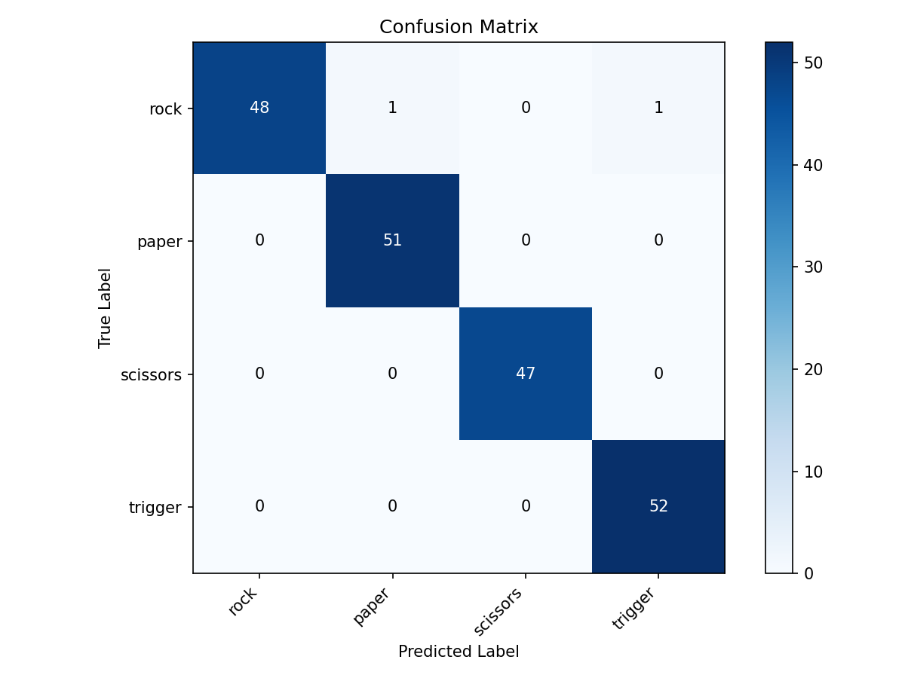
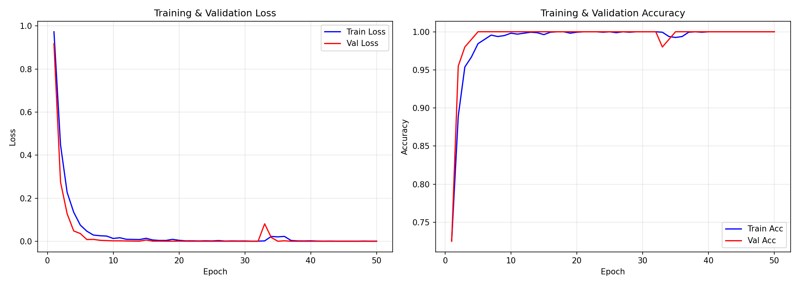

MediaPipe 손동작 인식 기반
실시간 마법 전투 디펜스 게임
단방향 의존성 — AI와 게임을 독립 개발 후 bridge에서 통합
| 입력 채널 | 역할 | 게임 동작 |
|---|---|---|
| 왼손 | 마법 스택 입력 | rock paper scissors 콤보 누적 |
| 오른손 | 조준 및 발사 | 검지 기반 조준, 엄지-검지 pinch로 발사 |
| 양손 | 특수 조작 | clasp 마나 충전, sonaldo 전장 전환 |
trigger 제스처의 불안정성 분석 후, aim + pinch fire 방식으로 재설계→ CNN 하나가 모든 제스처를 분류하는 구조
→ 모델 + 규칙 + 상태머신 하이브리드
x, y, z
랜드마크 텐서(21, 3)
손가락 상태(5,) — 펴짐/접힘
입력 방식Dual-branch (별도 입력)
z는 단일 RGB 카메라 기반 추정값
→ trigger 제스처 실패의 근본 원인
00_collect_data — raw landmark 수집01_preprocess — 정규화 + 손가락 상태 추출02_train_model — GestureCNN 학습04_evaluate — 혼동 행렬 + 평가08_ai_workflow로 전 과정 통합 실행
Conv1d로 관절 순서의 공간적 패턴을 학습하고, finger state를 명시적 힌트로 결합
CameraThread에 mirror=True, swap_handedness=True 기본 적용단순한 좌표 문제처럼 보이지만, HCI에서는 사용자 좌표계와 모델 좌표계를 맞추는 것이 필수
trigger는 엄지/검지의 깊이 방향 관계가 중요z는 RGB 기반 추정 → 안정적이지 않음핵심 교훈: 학습 데이터를 늘려서 해결하려 했지만, 실제로는 제스처 정의 자체가 센서에 맞지 않았다
trigger를 "모양 분류"로 해결하지 않음정적 포즈가 아니라 동작의 변화량으로 발사 판정
rock / paper / scissors
fire
clasp / sonaldo
aim_pos를 공유aim_pos 업데이트조준 — 검지 끝(landmark 8) 중심, sensitivity 매핑 + EMA smoothing
발사 — 엄지-검지 거리를 손 크기로 정규화
open_threshold → armed → closed_threshold + 닫힘 속도 → fire
문제: pinch 시 검지가 움직여 조준점이 흔들림
해결: 발사 순간이 아닌 직전 aim history 좌표를 사용
clasp — same-pair touch
양손 검지끼리, 엄지끼리 가까운 다이아몬드 형태 → 마나 충전
sonaldo — cross-pair touch
왼손 검지↔오른손 엄지, 왼손 엄지↔오른손 검지 → 전장 전환
손 크기로 정규화한 landmark pair 거리로 판정
이미지 분류가 아니라 손 구조의 기하학을 직접 활용
| 문제 | 원인 분석 | 수정 |
|---|---|---|
| 왼손/오른손 혼동 | mirrored camera + handedness mismatch | handedness swap, 손 역할 분리 |
| trigger 인식 불안정 | z축/깊이 정보 한계, 손 방향 변화 | trigger 제거 → aim + pinch fire 재설계 |
| idle/unknown 학습 애매함 | "모르는 것"의 분포가 너무 넓음 | candidate gate + None 반환 |
| 손바닥/손등 방향 변화 | 단일 포즈 데이터로 일반화 어려움 | 손가락 상태 규칙 + 모드 안정화 |
| pinch 시 조준점 이동 | 발사 동작이 검지 위치를 흔듦 | 발사 직전 aim history 좌표 사용 |
| clasp/sonaldo 혼동 | 두 손가락 pair 관계가 유사 | same-pair / cross-pair 거리 규칙 분리 |
| 순간 추적 끊김 | 웹캠/MediaPipe frame noise | stable delay + grace time + cooldown |
강조 항목 — 발표에서 깊이 설명 | 나머지 — 질의응답 시 보충


정확도 숫자만이 아니라, 실시간 게임 입력의 시간적 안정성과 사용감도 평가 기준
데모 영상 준비 중
이 슬라이드의 HTML 주석을 해제하고 영상 파일 경로를 지정하세요
왼손 스택 → 오른손 조준/발사 → 양손 마나 충전 → 전장 전환 시연